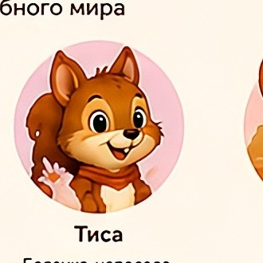
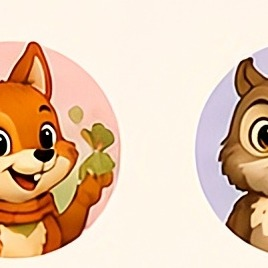
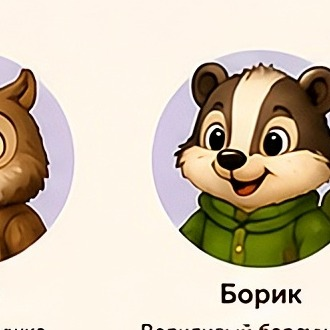
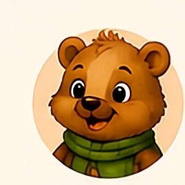
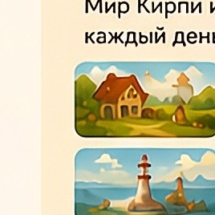

🌿 Наши друзья
Познакомьтесь с героями нашего волшебного мира
 КирпиЛюбознательный ёжик и верный друг
КирпиЛюбознательный ёжик и верный друг
 ГоферДобрый суслик, всегда готов помочь
ГоферДобрый суслик, всегда готов помочь

ТисаБелочка-непоседа, очень быстрая
ЛулуЛисичка умная и находчивая
СоняМудрая совушка, знает всё на свете
БорикВорчливый барсучонок, но добрый внутри
БруноСильный медвежонок с большим сердцем